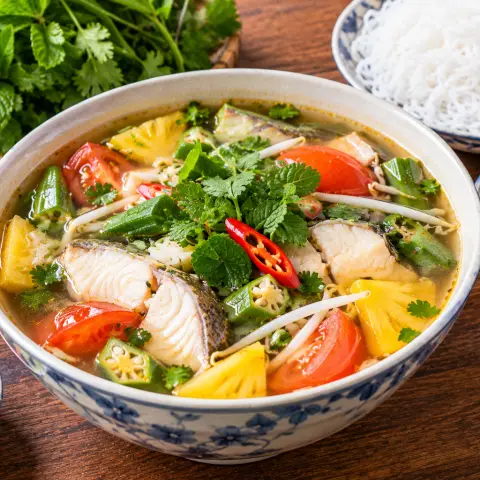

🐟 Sopa agridulce de pescado
Sopa del sur de Vietnam: pescado, tamarindo, piña, tomate y brotes de soja.
Ingredientes
- Filete de pescado blanco450 g
- Salsa de pescado3 cda
- Pimienta negra0,25 cdta
- Pasta de tamarindo85 g
- Ajo4 dientes
- Aceite1 cda
- Okra170 g
- Piña230 g
- Tomate2
- Brotes de soja170 g
- Caldo de pollo1400 ml
- Azúcar1 cda
- Hierbas frescas1 manojo
Pasos
- Corta el pescado en trozos y sazónalo con 1 cda de salsa de pescado y una pizca de pimienta mientras preparas lo demás.
- Aplasta el tamarindo en 240 ml de agua caliente unos 5 minutos y cuélalo. Corta la okra en rodajas, el tomate en gajos y la piña en trozos.
- Dora el ajo picado en el aceite y resérvalo.
- Lleva el caldo a ebullición, añade el pescado y cuece hasta que vuelva a hervir, unos 3 minutos; baja a fuego medio.
- Añade el azúcar, el resto de la salsa de pescado y el agua de tamarindo. Agrega la okra y la piña 2 minutos, luego el tomate 1 minuto y los brotes de soja 1 minuto.
- Prueba y equilibra ácido, dulce y salado. Termina con hierbas, ajo frito y pimienta negra.
Cocínala paso a paso en Yumwell
Temporizador en cada paso, lista de la compra y menú semanal. Gratis en Google Play.